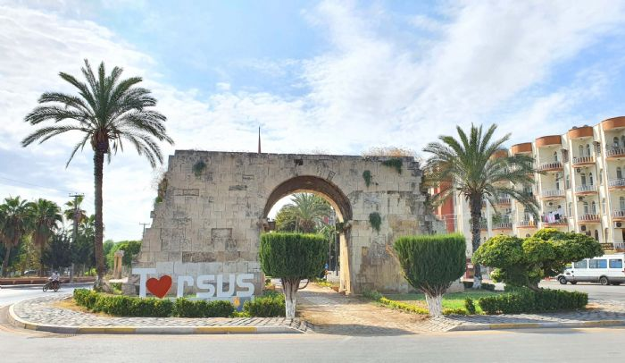

Tarsus Hakkında
Tarsus, Mersin ilinin bir ilçesidir. Tarihi MÖ 7. yüzyıla kadar uzanan Tarsus, Anadolu'nun en eski yerleşim yerlerinden biridir. Şehir, Roma, Bizans, Selçuklu ve Osmanlı İmparatorluğu gibi birçok medeniyete ev sahipliği yapmıştır.
Tarsus, zengin tarihi ve kültürü ile önemli bir turistik cazibe merkezidir. Şehir, Ashab-ı Kehf Mağarası, St. Paul Kuyusu, Tarsus Müzesi gibi birçok tarihi ve kültürel mekana ev sahipliği yapmaktadır.